Chapter 11 Basic ggplot
11.1 Intro to grammar
The ggplot2 package is widely used and valued for its simple, consistent approach to making data visuals.
The 'grammar of graphics' relates to the different components of a plot that function like different parts of linguistic grammar. For example, all plots require axes, so the x and y axes form one part of the ‘language’ of a plot. Similarly, all plots have data represented between the axes, often as points, lines or bars. The visual way that the data is represented forms another component of the grammar of graphics. Furthermore, the colour, shape or size of points and lines can be used to encode additional information in the plot. This information is usually clarified in a key, or legend, which can also be considered part of this ‘grammar’.
The philosophy of ggplot is much better explained by the package author, Hadley Wickham (Wickham et al. (2023)). For now, we just need to be aware that ggplots are constructed by specifying the different components that we want to display, based on underlying information in a data frame.

Figure 11.1: An example of what we can produce in ggplot
11.2 Building a plot
To start building the plot We are going to use the penguin data we have been working with previously. First we must specify the data frame that contains the relevant data for our plot. We can do this in two ways:
- Here we are ‘sending the penguins data set into the ggplot function’:
- Here we are specifying the dataframe within the
ggplot()function
The output is identical
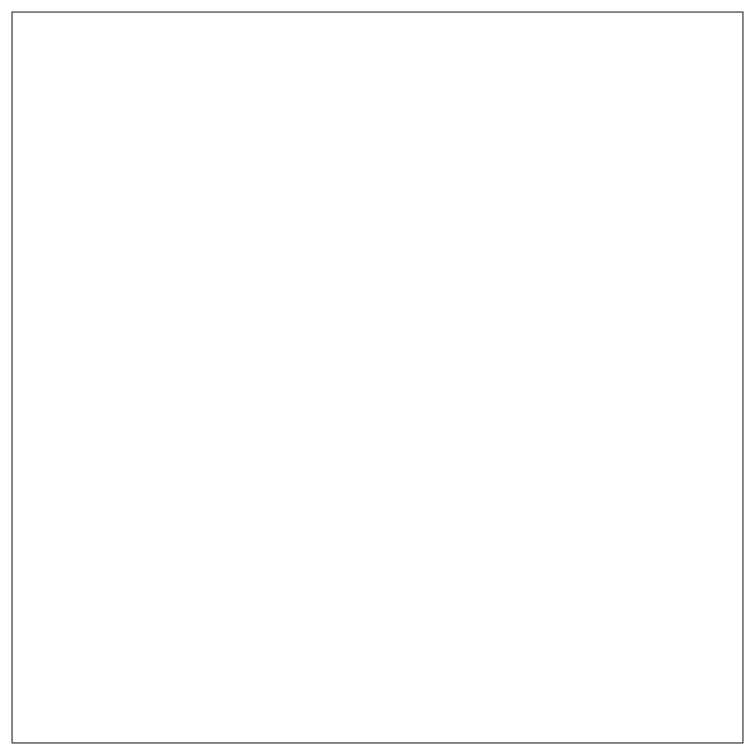
Running this command will produce an empty grey panel. This is because we need to specify how different columns of the data frame should be represented in the plot.
11.2.1 Aesthetics - aes()
We can call in different columns of data from any dataset based on their column names. Column names are given as ‘aesthetic’ elements to the ggplot function, and are wrapped in the aes() function.
Because we want a scatter plot, each point will have an x and a y coordinate. We want the x axis to represent flipper length ( x = flipper_length_mm ), and the y axis to represent the body mass ( y = body_mass_g ).
We give these specifications separated by a comma. Quotes are not required when giving variables within aes().
Those interested in why quotes aren’t required can read about non-standard evaluation.

So far we have the grid lines for our x and y axis. ggplot() knows the variables required for the plot, and thus the scale, but has no information about how to display the data points.
11.3 Geometric representations - geom()
Given we want a scatter plot, we need to specify that the geometric representation of the data will be in point form, using geom_point(). There are many geometric object types.

Figure 11.2: geom shapes
Here we are adding a layer (hence the + sign) of points to the plot. We can think of this as similar to e.g. Adobe Photoshop which uses layers of images that can be reordered and modified individually. Because we add to plots layer by layer the order of your geoms may be important for your final aesthetic design.
For ggplot, each layer will be added over the plot according to its position in the code. Below I first show the full breakdown of the components in a layer. Each layer requires information on
- data
- aesthetics
- geometric type
- any summary of the data
- position
## Add a geom ----
penguins %>%
ggplot(aes(x=flipper_length_mm,
y = body_mass_g))+
layer( # layer inherits data and aesthetic arguments from previous
geom="point", # draw point objects
stat="identity", # each individual data point gets a geom (no summaries)
position=position_identity()) # data points are not moved in any way e.g. we could specify jitter or dodge if we want to avoid busy overlapping dataThis is quite a complicate way to write new layers - and it is more usual to see a simpler more compact approach
penguins %>%
ggplot(aes(x=flipper_length_mm,
y = body_mass_g))+
geom_point() # geom_point function will always draw points, and unless specified otherwise the arguments for position and stat are both "identity".
Now we have the scatter plot! Each row (except for two rows of missing data) in the penguins data set now has an x coordinate, a y coordinate, and a designated geometric representation (point).
From this we can see that smaller penguins tend to have smaller flipper lengths.
11.3.1 %>% and +
ggplot2, an early component of the tidyverse package, was written before the pipe was introduced. The + sign in ggplot2 functions in a similar way to the pipe in other functions in the tidyverse: by allowing code to be written from left to right.
11.3.2 Colour
The colors of lines and points can be set directly using colour="red", replacing “red” with a color name. The colors of filled objects, like bars, can be set using fill="red".
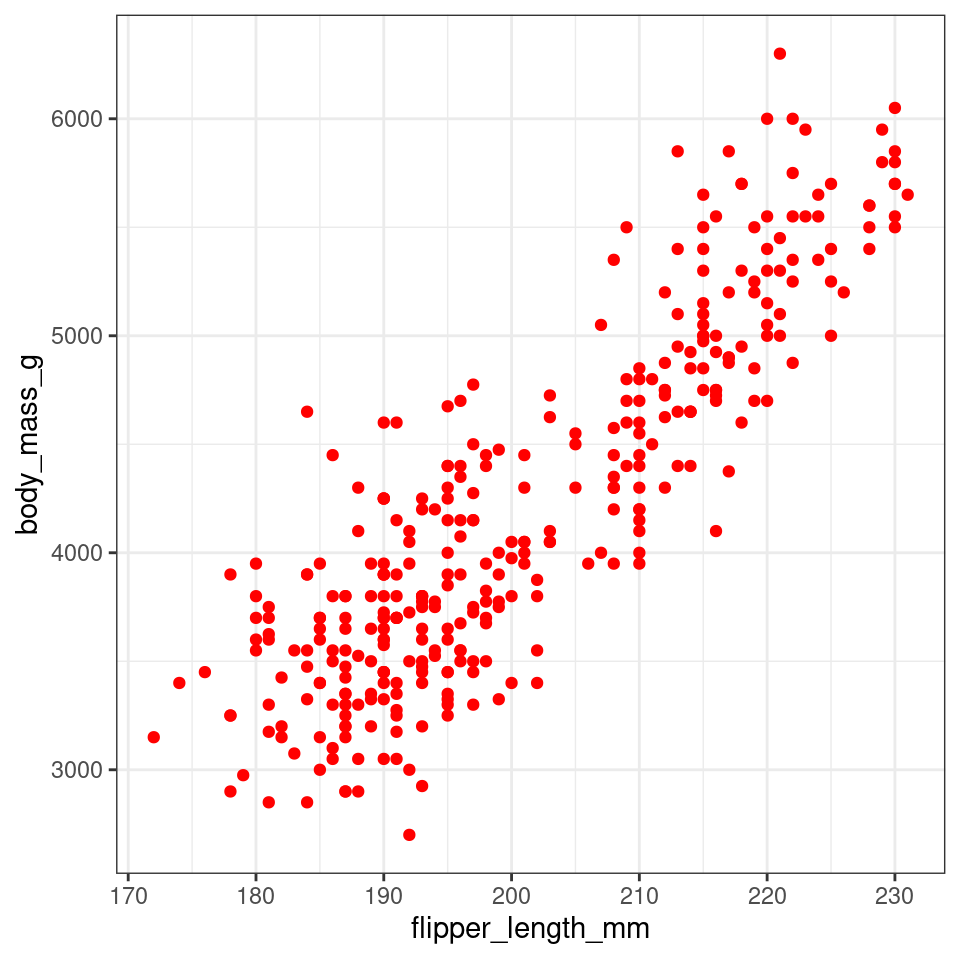
However the current plot could be more informative if colour was used to convey information about the species of each penguin.
In order to achieve this we need to use aes() again, and make the colour conditional upon a variable.
Here, the aes() function containing the relevant column name, is given within the geom_point() function.
A common mistake is to get confused about when to use (or not use)
aes()
If specifying a fixed aesthetic e.g. red for everything it DOES NOT
go inside aes() instead specify e.g. colour = “red” or
shape =21.
If you wish to modify an aethetic according to a variable in your
data THEN it DOES go inside aes()
e.g. aes(colour = species)
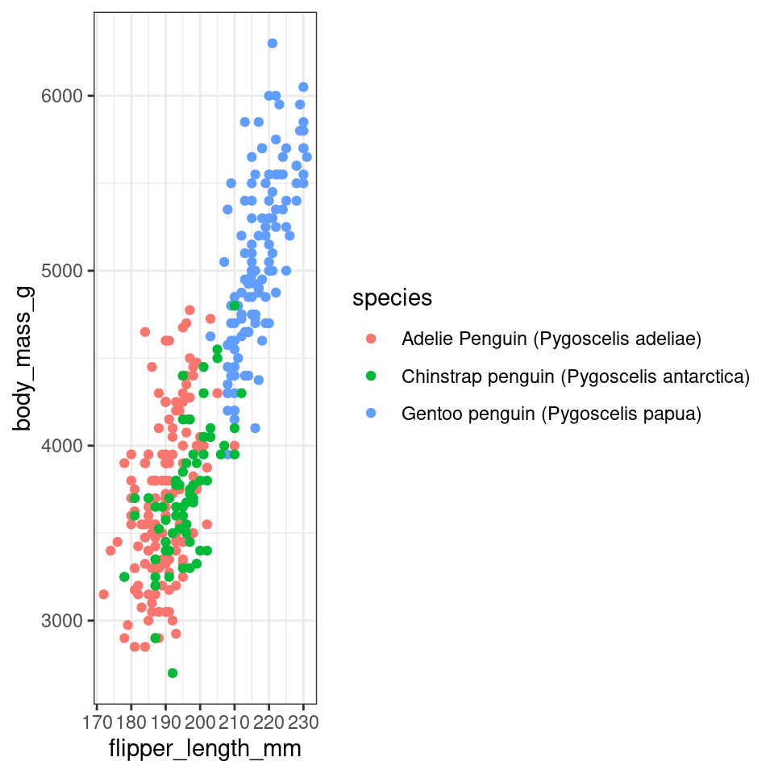
You may (or may not) have noticed that the grammar of ggplot (and tidyverse in general) accepts British/Americanization for spelling!!!
With data visualisations we can start to gain insights into our data very quickly, we can see that the Gentoo penguins tend to be both larger and have longer flippers
Add carriage returns (new lines) after each %>% or + symbols.
In most cases, R is blind to white space and new lines, so this is simply to make our code more readable, and allow us to add readable comments.
11.3.3 More layers
We can see the relationship between body size and flipper length. But what if we want to model this relationship with a trend line? We can add another ‘layer’ to this plot, using a different geometric representation of the data. In this case a trend line, which is in fact a summary of the data rather than a representation of each point.
The geom_smooth() function draws a trend line through the data. The default behaviour is to draw a local regression line (curve) through the points, however these can be hard to interpret. We want to add a straight line based on a linear model (‘lm’) of the relationship between x and y.
This is our first encounter with linear models in this course, but we will learn a lot more about them later on.
## Add a second geom ----
penguins %>%
ggplot(aes(x=flipper_length_mm,
y = body_mass_g))+
geom_point(aes(colour=species))+
geom_smooth(method="lm", #add another layer of data representation.
se=FALSE,
aes(colour=species)) # note layers inherit information from the top ggplot() function but not previous layers - if we want separate lines per species we need to either specify this again *or* move the color aesthetic to the top layer. 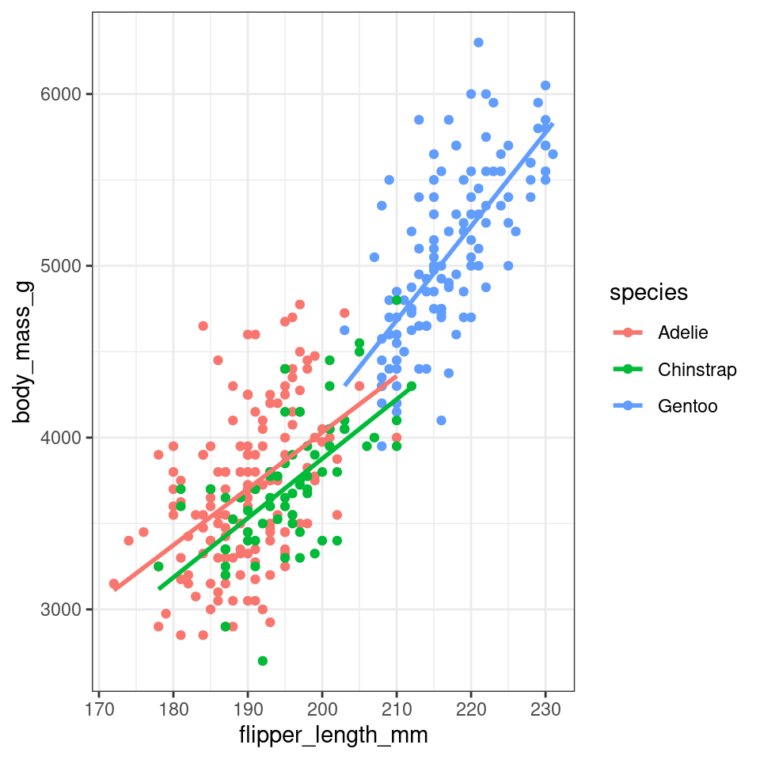
In the example above we may notice that we are assigning colour to the same variable (species) in both geometric layers. This means we have the option to simplify our code. Aesthetics set in the "top layer" of ggplot() are inherited by all subsequent layers.
penguins %>%
ggplot(aes(x=flipper_length_mm,
y = body_mass_g,
colour=species))+ ### now colour is set here it will be inherited by ALL layers
geom_point()+
geom_smooth(method="lm", #add another layer of data representation.
se=FALSE)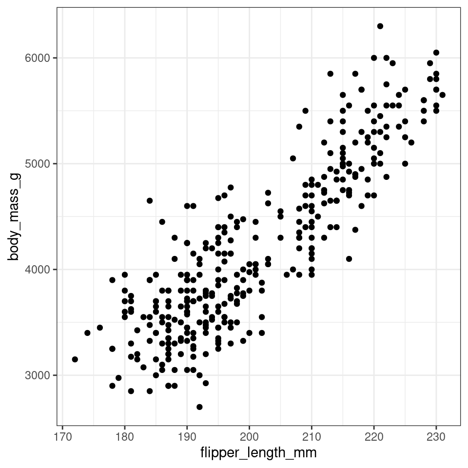
Note - that the trend line is blocking out certain points, because it is the ‘top layer’ of the plot. The geom layers that appear early in the command are drawn first, and can be obscured by the geom layers that come after them.
What happens if you switch the order of the geom_point() and geom_smooth() functions above? What do you notice about the trend line?
11.4 More plots
11.4.1 Jitter
The geom_jitter() command adds some random scatter to the points which can reduce over-plotting. Compare these two plots:
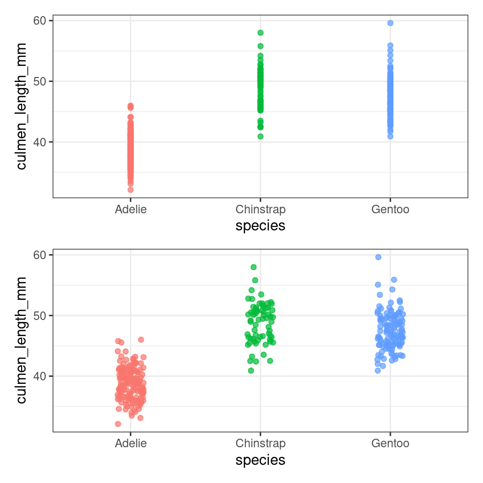
## geom point
ggplot(data = penguins, aes(x = species, y = culmen_length_mm)) +
geom_point(aes(color = species),
alpha = 0.7,
show.legend = FALSE)
## More geoms ----
ggplot(data = penguins, aes(x = species, y = culmen_length_mm)) +
geom_jitter(aes(color = species),
width = 0.1, # specifies the width, change this to change the range of scatter
alpha = 0.7, # specifies the amount of transparency in the points
show.legend = FALSE) # don't leave a legend in a plot, if it doesn't add value11.4.2 Boxplots
Box plots, or ‘box & whisker plots’ are another essential tool for data analysis. Box plots summarize the distribution of a set of values by displaying the minimum and maximum values, the median (i.e. middle-ranked value), and the range of the middle 50% of values (inter-quartile range). The whisker line extending above and below the IQR box define Q3 + (1.5 x IQR), and Q1 - (1.5 x IQR) respectively. You can watch a short video to learn more about box plots here.

To create a box plot from our data we use (no prizes here) geom_boxplot()
ggplot(data = penguins, aes(x = species, y = culmen_length_mm)) +
geom_boxplot(aes(fill = species),
alpha = 0.7,
width = 0.5, # change width of boxplot
show.legend = FALSE)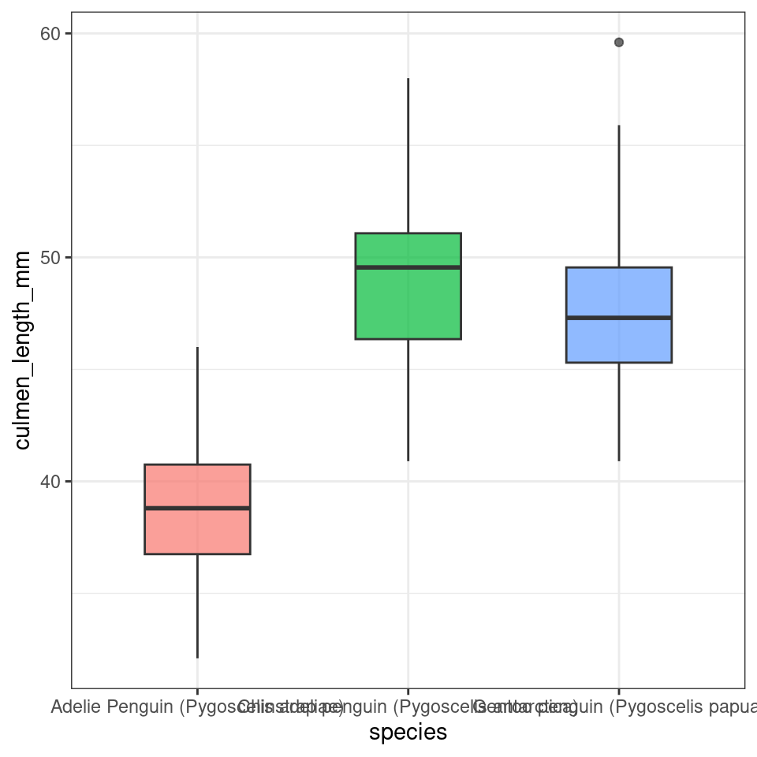
Note that when specifying colour variables using aes()
some geometric shapes support an internal colour “fill” and an external
colour “colour”. Try changing the aes fill for colour in the code above,
and note what happens.
The points indicate outlier values [i.e., those greater than Q3 + (1.5 x IQR)].
We can overlay a boxplot on the scatter plot for the entire dataset, to fully communicate both the raw and summary data. Here we reduce the width of the jitter points slightly.
ggplot(data = penguins, aes(x = species, y = culmen_length_mm)) +
geom_boxplot(aes(fill = species), # note fill is "inside" colour and colour is "edges" - try it for yourself
alpha = 0.2, # fainter boxes so the points "pop"
width = 0.5, # change width of boxplot
outlier.shape=NA)+
geom_jitter(aes(colour = species),
width=0.2)+
theme(legend.position = "none")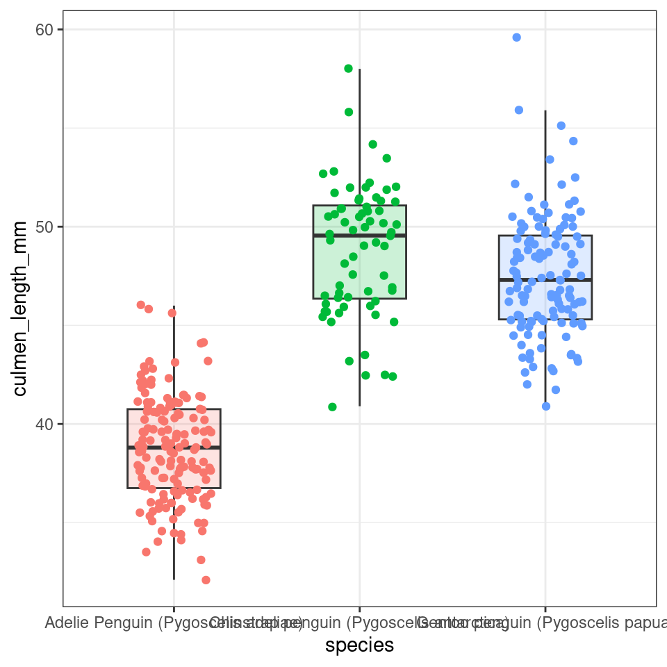
In the above example I switched from using show.legend=FALSE inside the geom layer to using theme(legend.position=“none”). Why? This is an example of reducing redundant code. I would have to specify show.legend=FALSE for every geom layer in my plot, but the theme function applies to every layer. Save code, save time, reduce errors!
11.4.3 Violin plots
Violin plots display the distribution of a dataset and can be created by calling geom_violin(). They are so-called because the shape they make sometimes looks something like a violin. They are essentially sideways, mirrored density plots. Note that the below code is identical to the code used to draw the boxplots above, except for the call to geom_violin() rather than geom_boxplot().
penguins |>
drop_na(sex) |>
ggplot(aes(x = species, y = culmen_length_mm)) +
geom_violin(aes(fill = sex),
width = 0.5)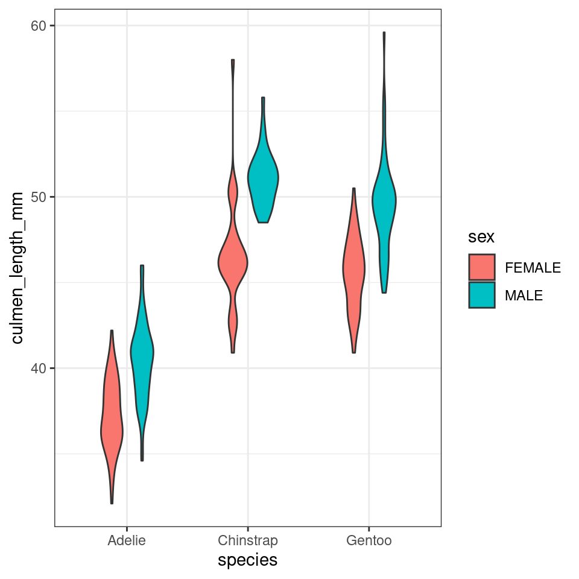
11.4.4 Bar plots

If your dataset already has the counts that you want to plot, you can set stat="identity" inside of geom_bar() to use that number instead of counting rows.
We could go for a stacked bar approach
penguins |>
ggplot(aes(x="",
fill=species))+
# specify fill = species to ensure colours are defined by species
geom_bar(position="fill")+
labs(x="",
y="")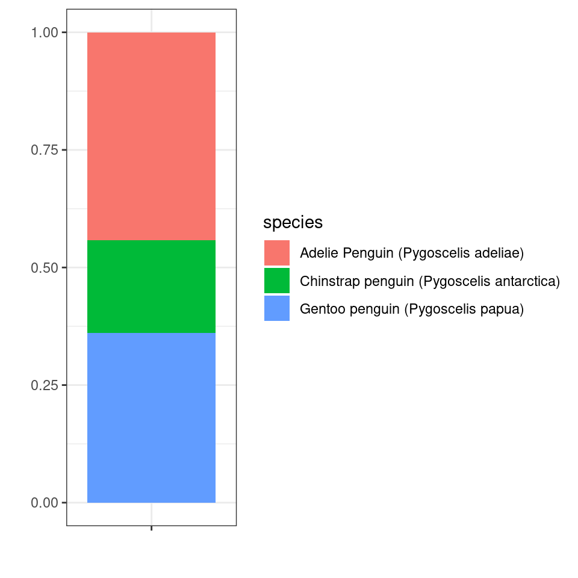
This graph is OK but not great, the height of each section of the bar represents the relative proportions of each species in the dataset, but this type of chart becomes increasingly difficult to read as more categories are included. Colours become increasingly samey,and it is difficult to read where on the y-axis a category starts and stops, you then have to do some subtraction to work out the values.
11.4.5 Density and histogram
The base statistic for geom_histogram() is count, and by default geom_histogram() divides the x-axis into 30 "bins" and counts how many observations are in each bin and so the y-axis does not need to be specified. When you run the code to produce the histogram, you will get the message "stat_bin() using bins = 30. Pick better value with binwidth". You can change this by either setting the number of bins (e.g., bins = 20) or the width of each bin (e.g., binwidth = 5) as an argument.
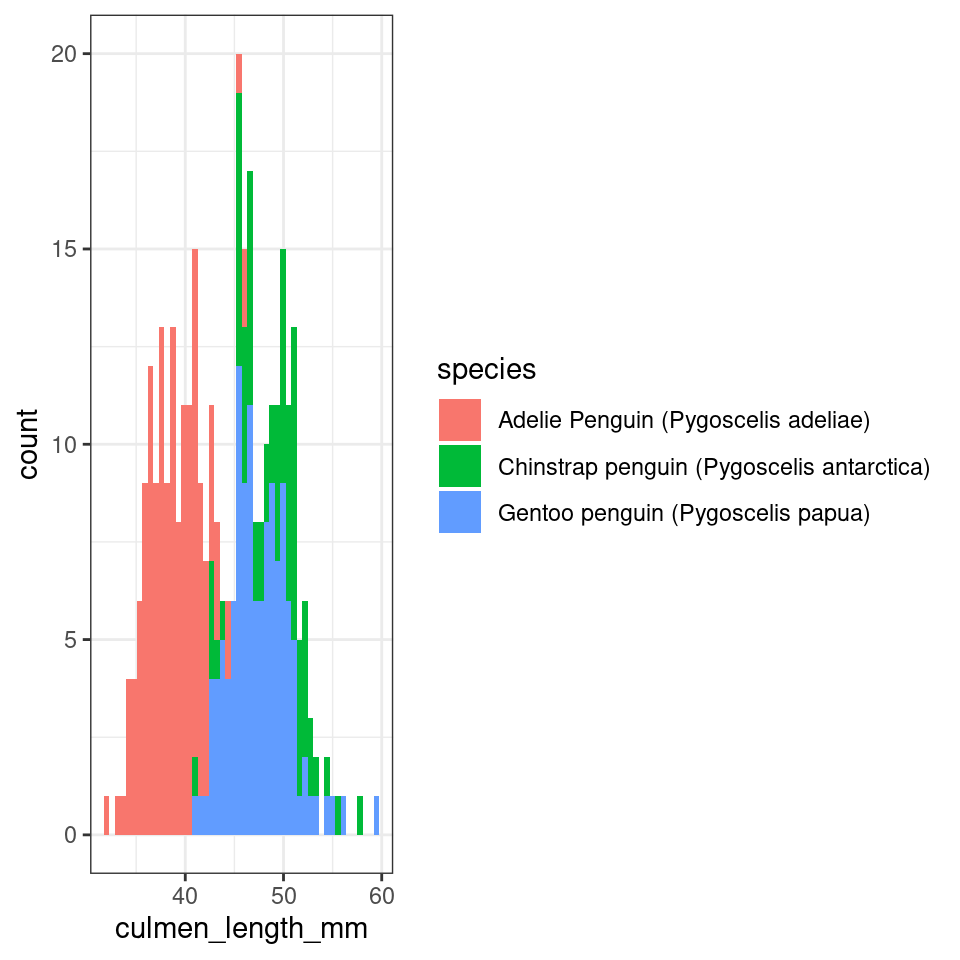
The layer system makes it easy to create new types of plots by adapting existing recipes. For example, rather than creating a histogram, we can create a smoothed density plot by calling geom_density() rather than geom_histogram(). The rest of the code remains identical.
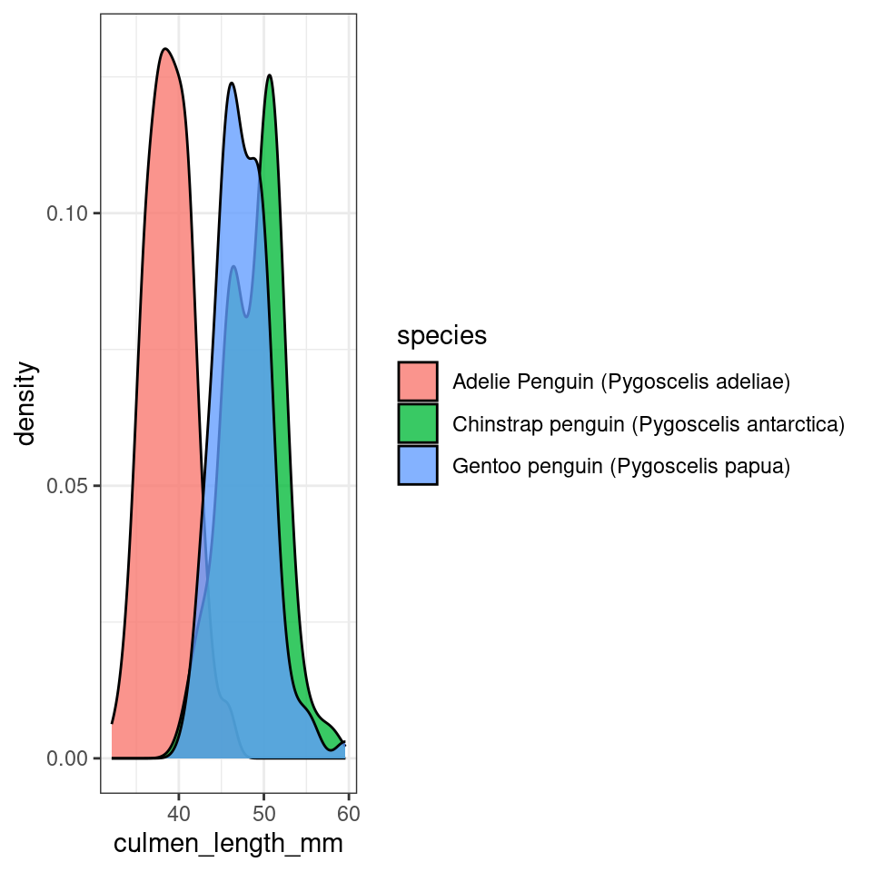